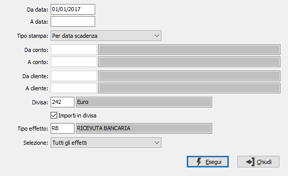

Stampa situazione effetti
Il programma consente l’analisi degli effetti in portafoglio secondo vari criteri di selezione, producendo un report a stampa.
Possono essere selezionati tutti gli effetti, solo quelli da presentare oppure quelli già presentati.
L’analisi può essere selezionata per data di scadenza, per conto di presentazione (banca) e data di scadenza, oppure per cliente / data di scadenza; possono essere selezionati gli effetti relativi ad una specifica divisa, oppure quelli relativi ad una specifica tipologia (ricevute bancarie, tratte, cessioni).
I valori possono inoltre essere presentati in divisa oppure in divisa di conto.
Il programma è accessibile tramite le scelte Contabilità, Effetti attivi, Situazione effetti; effettuata la scelta, appare la seguente maschera video:

DA DATA: indicare la data di scadenza da cui si intende iniziare la selezione degli effetti per la stampa. Confermando a vuoto la stampa inizia dal primo effetto valido per l'esercizio corrente.
A DATA: indicare la data scadenza con cui si intende terminare la selezione degli effetti per la stampa. Confermando a vuoto la stampa termina con l'ultimo effetto valido.
TIPO STAMPA: combo box per definire il tipo di ordinamento effetti;
DA CONTO: campo accessibile solo se il è stato scelto il tipo di stampa per conto di presentazione / data; inserire il codice alfanumerico di 8 caratteri, presente nella tabella Conti correnti, per indicare la banca di presentazione con cui si vuole iniziare la selezione. Con questa selezione vengono omessi tutti gli effetti non ancora assegnati ad una banca di presentazione. Sul campo sono attive le funzioni di ricerca (F9) sulla tabella stessa.
A CONTO: campo accessibile solo se il è stato scelto il tipo di stampa per conto di presentazione / data; inserire il codice alfanumerico di 8 caratteri, presente nella tabella Conti correnti, per indicare la banca di presentazione con cui si vuole concludere la selezione. Sul campo sono attive le funzioni di ricerca (F9) sulla tabella stessa.
DA CLIENTE: campo accessibile solo se il è stato scelto il tipo di stampa per cliente / data; inserire il codice alfanumerico di 8 caratteri, presente nella tabella Anagrafica Clienti, per indicare il cliente con cui si vuole iniziare la selezione. Sul campo sono attive le funzioni di ricerca (F9) sulla tabella stessa.
DA CLIENTE: campo accessibile solo se il è stato scelto il tipo di stampa per cliente / data; inserire il codice alfanumerico di 8 caratteri, presente nella tabella Anagrafica Clienti, per indicare il cliente con cui si vuole concludere la selezione. Sul campo sono attive le funzioni di ricerca (F9) sulla tabella stessa.
DIVISA: codice alfanumerico di 3 caratteri, presente nella tabella Divise, per indicare la divisa degli effetti che si vogliono selezionare. Confermando a vuoto vengono selezionati gli effetti di tutte le divise presenti. Sul campo sono attive le funzioni di ricerca (F9) sulla tabella stessa.
FLAG IMPORTI IN DIVISA: flag per definire le modalità di visualizzazione importi.
Vuoto = Visualizza gli importi e i totali nella divisa di conto (Lire o Euro)
Spunta = Visualizza gli importi nella divisa del documento.
TIPO EFFETTO: definisce il tipo di effetto da selezionare. Sul campo è attiva la funzione di ricerca (F9).
SELEZIONE: combo box per definire il tipo di selezione da effettuare;
A conferma selezione, viene prodotta la stampa del report